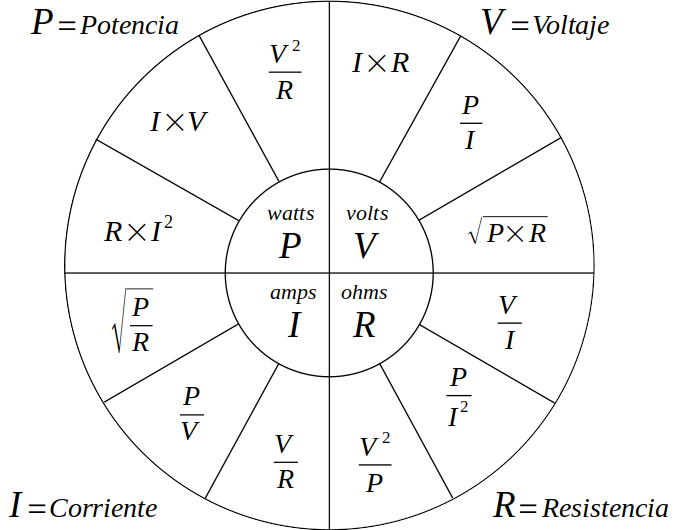

Circuitos Eléctricos
Apuntes
Índice
1 Definiciones
1.1 Circuitos
Son un modelo para el estudio de sistemas de energía en general. Un Circuito eléctrico simple, consta de tres elementos básicos: una batería, una lámpara y alambres de conexión.
1.2 Circuito eléctrico
Es un modelo matemático que simula el comportamiento de un sistema eléctrico real. También se define como la interconexión de dispositivos eléctricos.
2 Carga electrica (coulombs)
Es el principio fundamental para explicar todos los fenómenos eléctricos. Asimismo, la cantidad básica en un circuito es la carga eléctrica. De la física básica sabemos que hay dos tipos de carga: positiva (protón1) y negativa (electrón2).
La unidad de medida de la carga es Coulomb3 (C), que se define en términos del ampere al contar la carga total que pasa por una sección transversal arbitraria de un alambre durante un segundo.
3 Tensión ó voltage
Para mover el electrón en un conductor en una dirección particular es necesario realizar algo de trabajo o transferir energía. Este trabajo lo lleva a cabo una fuerza electromotriz externa (fem) también conocida como tensión, diferencia de potencial o voltage4.
4 Potencia (watts)
es la variación respecto del tiempo de gasto o absorción de energía, medida en watts (W). Si un Joule de energía se gasta en transferir un Coulomb de carga a través del dispositivo en un segundo, la tasa de transferencia de energía es un watt.
La potencia absorbida o suministrada por un elemento es el producto de la tensión entre los extremos del elemento y la corriente a través de él. Si la potencia tiene signo +, se está suministrando o la está absorbiendo el elemento. Si, por el contrarió, tiene signo -, está suministrada por el elemento.
\[ p = vi \]
La ley de conservación de la energía debe cumplirse en cualquier circuito. Por esta razón, la suma algebraica de la potencia en un circuito, en cualquier instante, debe ser cero.
\[ \sum p = 0 \]
5 Relacion entre carga, tensión, corriente y potencia

6 Tipos de corriente
- Corriente directa
- Si la corriente no cambia con el tiempo, sino que permanece constante, se conoce como corriente directa (cd). Por convención, el símbolo I se usa para representar la corriente constante.
- Corriente alterna
- Una corriente que varia con el tiempo se representa con el símbolo i. Una forma común de corriente que varía con el tiempo es la corriente senoidal o corriente alterna (ca).
7 Elementos de un circuito
Un circuito eléctrico es simplemente una interconexión de los elementos. El análisis de circuitos es el proceso de determinar las tensiones (o las corrientes) a través de los elementos del circuito. Hay dos tipos de elementos en los circuitos eléctricos:
- Pasivos
- Es incapaz de generar energía, ejemplos de estos son resistores, capacitores y los inductores.
- Activos
- Es capaz de generar energía, ejemplos de estos son generadores, baterias y amplificadores operacionales.